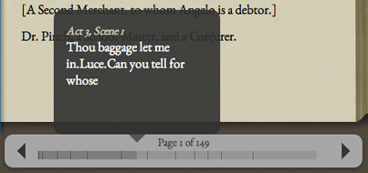

How To Use
Play Text
The text of the play is divided into pages that can be navigated using the left and right arrows below the text, clicking on the lower left-hand corner of the page, selecting a position from the progress bar, or by using the up/left/down/right cursor keys.
As you mouse over the progress bar, you will see a preview window with the page number and a brief text from the page you will jump to if you click that location.
As you advance through the pages of the text, the righthand Media Tabs Window (in the Book tab) will focus to the corresponding text region from the folio book image.
Finally, when the current page's text corresponds to related multimedia items, the corresponding tabs (Images, Audio, Video, Maps, and Book) in the Media Tabs Window will become highlighted, with a preview count of the number of available multimedia items.
Annotations Window
This edition of The Comedy of Errors uses Google Fusions Tables and Google Spreadsheets to store textual and media annotations. This means that YOU keep control of your annotations at all times in your Google account.
You will need a Gmail account to annotate this edition. (They're free.) Please note that to use this feature, you will need a regular, public Google account (such as an "@gmail.com" Gmail account), rather than a Google Enterprise account.
Once you have a Google account, click the "Login with Google Account" button at the lower right of the screen. You will be prompted to allow this application to use your account. This will allow the tool to create a Google Fusion Table in your Google Docs account and write data into it. If you want to annotate the text, you will need to grant it permission. The login is managed by Google, and so our application never has access to your password.
One you've logged in, highlight some of the text in the book. An abbreviated form of this text will appear above a form on the right hand side. When you type text into this form and hit "Save", the note and it's location will be saved in your Google account. The note will be loaded into the notes list in the left, and will be reloaded if you come back and login again. Your personal notes will appear in purple.
Media Tabs Window
Related audio, video, and images can be loaded from around the web if the links are placed in a Google Spreadsheet that is published as a webpage.
The spreadsheet must follow the template of this Edition. You can copy the sample spreadsheet to your own Google Drive account and adding links to YouTube and SoundCloud embeded objects or to images. available on the web.
To use another spreadsheet, add the key to the end of the URL of the main page
following a hash (like so:
http://comedyoferrors.zengrove.com/index.html#0Ag7PrlWT3aWadGZyRlhZMnJVdTgweWxtQkphUlRoWUE )
Again, be sure the spreadsheet is both public, AND published as a webpage.